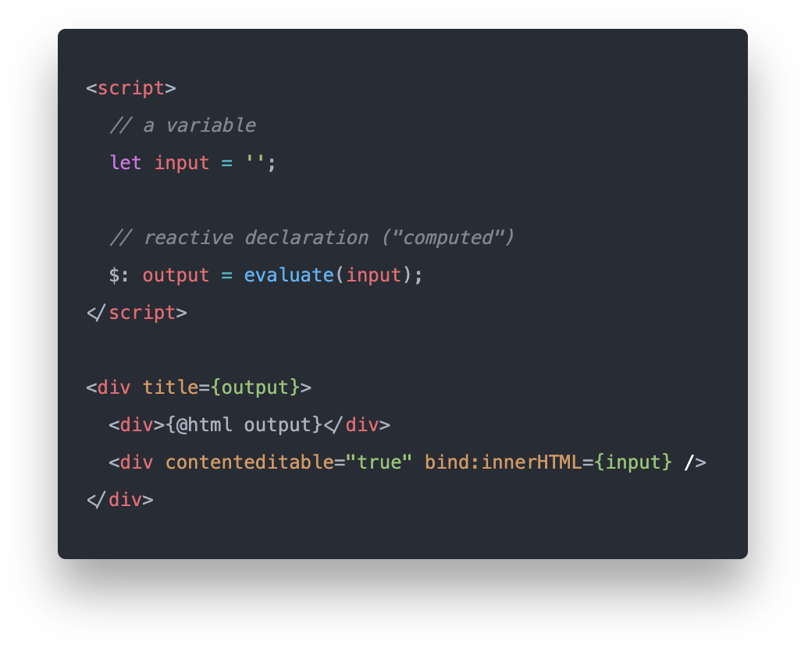

Svelte Spreadsheet
Project detailsTry it out- released
- 2020
- role
- creator
- platform
- Web
- tech
- Svelte
A very simple spreadsheet built with Svelte.
I discovered Svelte in 2019. It’s really interesting - a reactive component-based framework without the runtime bulk. There is no VDOM! Apparently, the DOM is updated directly with precise efficiency.
Svelte is a radical new approach to building user interfaces. Whereas traditional frameworks like React and Vue do the bulk of their work in the browser, Svelte shifts that work into a compile step that happens when you build your app.
Svelte website (2023)
So, I wanted to try it on a simple webapp. A spreadsheet app seems to be a good case for this. See, a cell can have formulas, which are derived from other cells. The spreadsheet model is inherently reactive.
Among the modern reactive UI frameworks, Svelte syntax is most similar to Vue, with one notable distinction: The script part is not required to be a subclass / object / function. It’s plain flat script!

It’s somehow liberating to not have to extend framework classes or follow predefined object shapes. There is no "framework".
The Svelte compiler acheives this by statically analyzing the source then tailoring the code to update the DOM at the correct times and places.
Verdict: Very cool 👍
Spreadsheet features
- Formulas (arithmetic only). JavaScript syntax. (
=1 + 2)
- Absolute references. (
=A1 + A2)
- Error detection (cyclic reference detection, syntax errors).
Not implemented (yet?)
- Math functions.
- Relative references.
- Lazy evaluation.
Source on GitHub!.